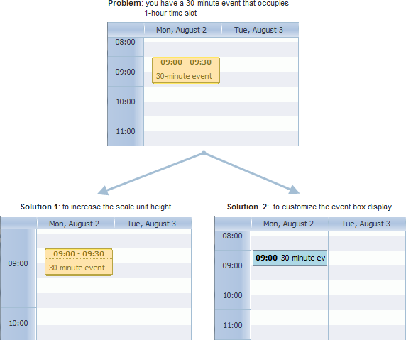
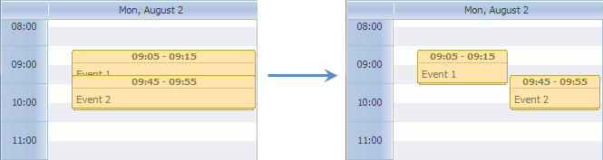
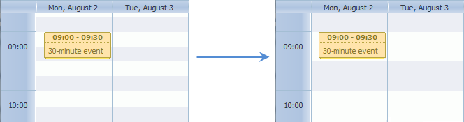
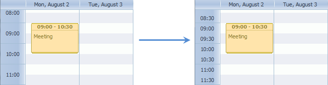

In this article we would like to consider scale's and event box's sizing through the example of solving 4 problems:
Problem 3: I change the scale unit height and want to change the striped background accordingly.
Problem 4: The default scale spacing is 1 hour. I want to change it and make, for example, 30 minutes.
First, let's learn the default behavior of the events boxes:
Let's assume you want 30-minute events to fit the scale. Then you have 2 solutions:

To change the height of the scale's unit you should use the hour_size_px configuration option.
For example, to increase the unit's height twice you should call the option as in:
scheduler.config.hour_size_px = 88;
scheduler.init(...);
Now the scale unit's height is 88 px and the 30-minute event taking 44px will occupy the 30-minute height, as it's needed.
Related sample: Changing the Y-Axis step
To customize the events boxes display, you should use the renderEvent method that allows you to set your own template for the events.
scheduler.renderEvent = function(container, ev) {
//your customizing code
}
Read the details in the related chapter - Custom Event's Box.
Related sample: Custom event box
To display short events separately and eliminate a possibility of their overlapping, you should set the separate_short_events option to true:
scheduler.config.separate_short_events = true;

The scheduler background is set by a mere image.
To change the background image you should redefine the related css class which is .dhx_scale_holder:
<style>
.dhx_scale_holder {
background-image: url("imgs/myNewImage.png");
}
</style>
scheduler.init(...);

To change the default scale spacing you need to rewrite the hour_scale template.
To make the scale spacing equal to 30 minutes you can rewrite the template as follows:
var format = scheduler.date.date_to_str("%H:%i");
var step = 30;
scheduler.templates.hour_scale = function(date){
var html="";
for (var i=0; i<60/step; i++){
html+="<div style='height:22px;line-height:22px;'>"+format(date)+"</div>";
date = scheduler.date.add(date,step,"minute");
}
return html;
}

Related samples:
Back to top